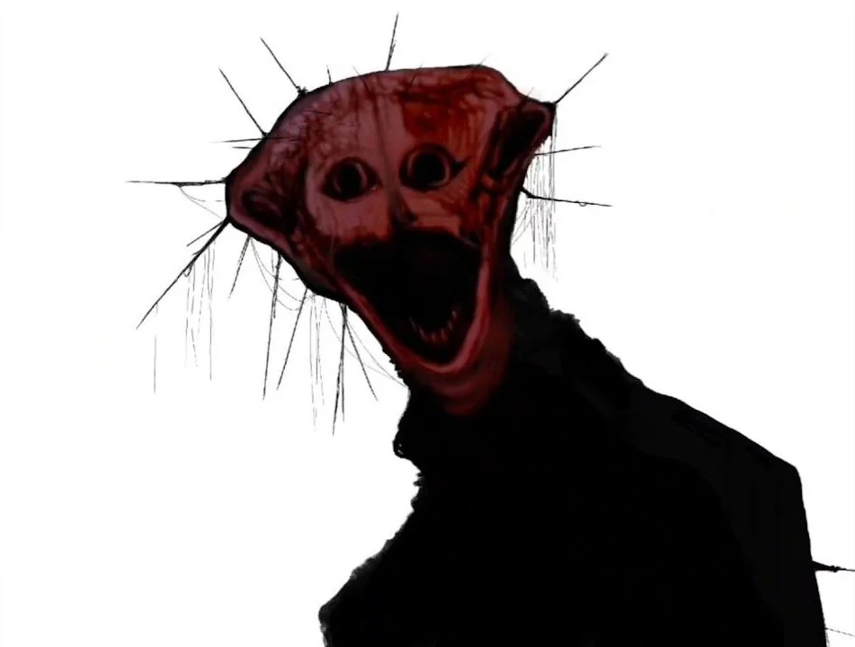
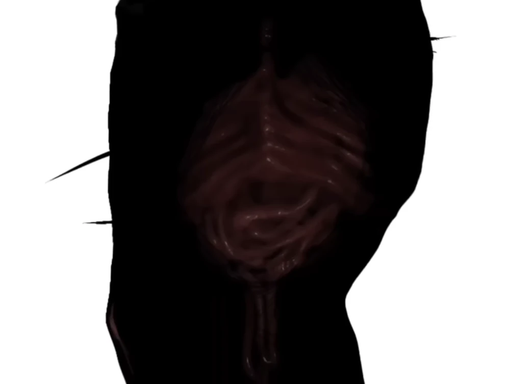
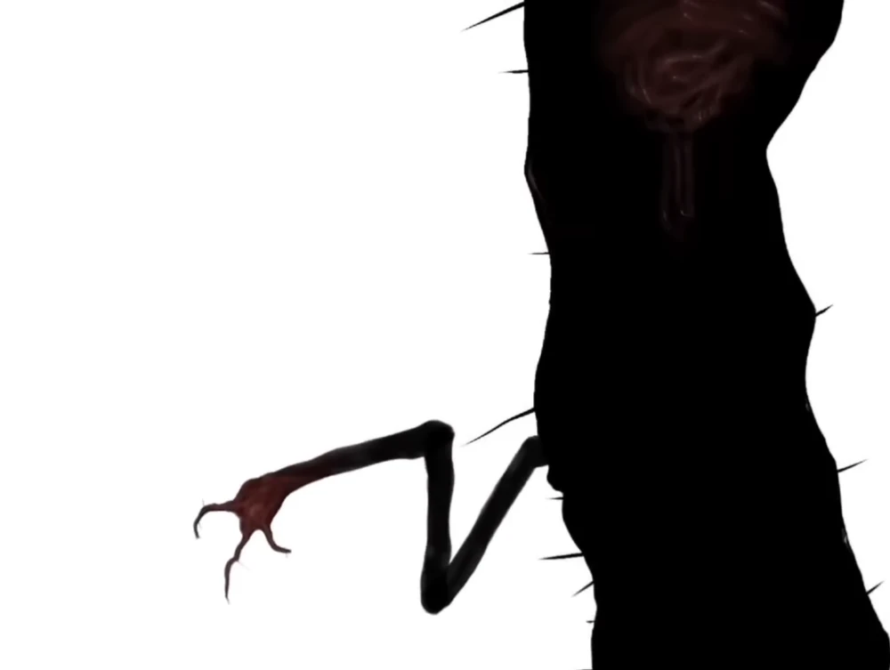
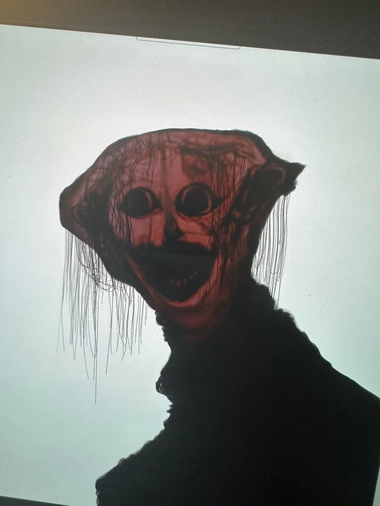
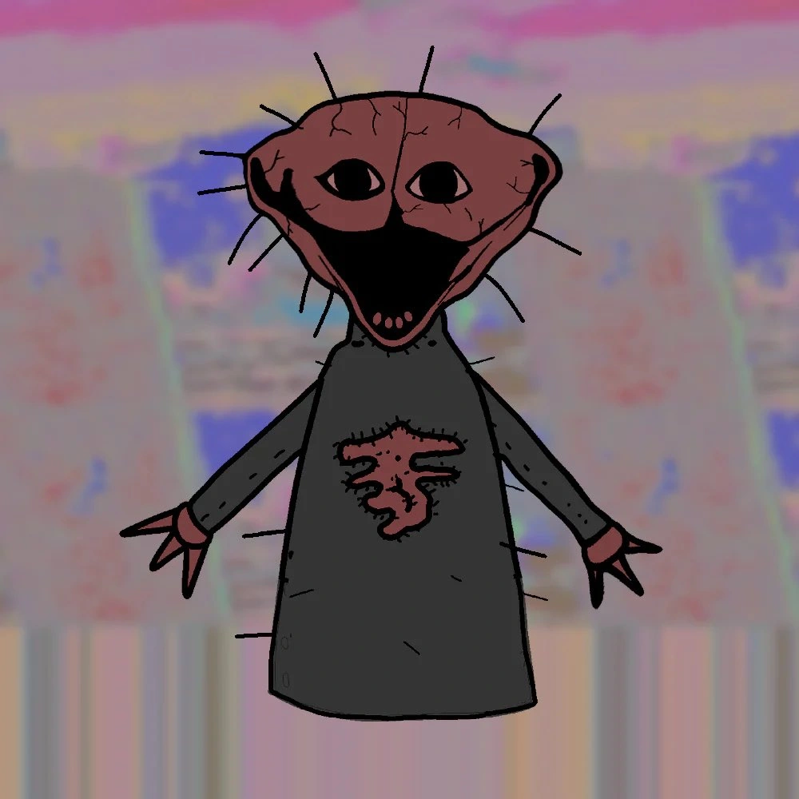
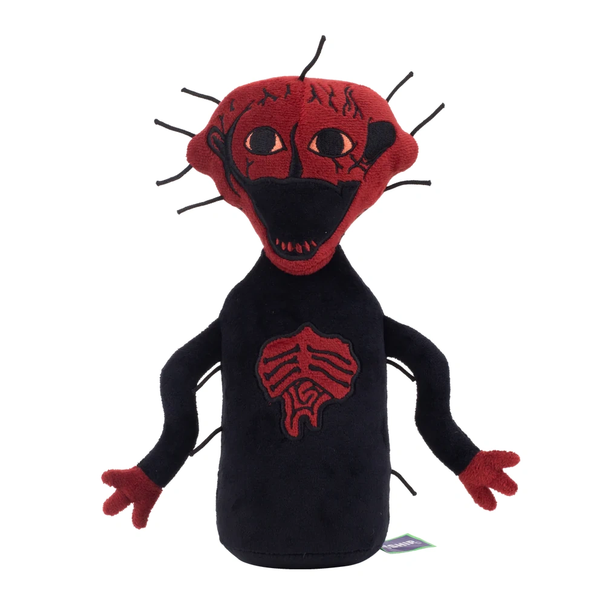

índice
¿Quién es el Hervido?
El hervido (también conocido como PHEN-228) es el antagonista principal de The Boiled One Phenomenom (Aquí tienes el video en youtube),
un video de terror analógico creado en 2024 por Doctor Nowhere.
Se trata de una entidad demoníaca, muy misteriosa y cognitopeligrosa (Algo como una palabra o concepto
cuyo aprendizaje es un potencial peligro)
que lleva una catastrófica profecía consigo.
Para poder transmitir su mensaje apocalíptico
secuestra estaciones de TV,
esto provoca una afluencia masiva de personas con pseudocoma (Enfermedad en la que no puedes mover
ninguna parte de tu cuerpo más allá de los ojos, es como estar despierto en un coma).
Apariencia
El hervido se presenta como una entidad muy alta con figura humanoide, con la piel desgarbada y en carne
viva con tonos carmesí.
Tiene la cabeza deforme con una apariencia derretida, la boca abierta con muchos dientes visibles y los
ojos grandes, que se parecen a los de los humanos.
Varios apéndices nerviosos, parecidos a pelos, sobresalen de su piel en líneas rectas. Suele vestir algo
parecido a una capa negra que cubre todo su cuerpo, que tiene los mismos apéndices puntiagudos que tiene
en su cabeza.
Varias tomas en el video demuestran que al menos tiene un brazo con varias articulaciones y tiene una
cavidad enorme y palpitante en su pecho.
Tiene la capacidad de cambiar su altura a voluntad, como por ejemplo para ser visto o encajar en
algún área. Para la vista de la mayoría de personas es invisible, solo es captado por las cámaras y por
aquellos que él quiere que lo vean.
Personalidad
Basado en lo poco que vemos de sus actos, sugiere que PHEN-228 es una entidad maliciosa, pero con un tono
de voz tranquilo y con una gran inteligencia que ataca activamente a quienes se cruzan en su camino,
encarnando el trauma y la malevolencia en sí.
Parece tener una especie de fijación con la familia de Job Zamperini, un prisionero de la Segunda Guerra
Mundial. Tortura a Job psicológicamente acechándolo a él y a su familia. Basándonos en el discurso en
una de las transmisiones secuestradas, podemos imaginar que PHEN-228 es plenamente consciente del
sufrimiento que inflige, haciendo a sus víctimas experimentar parálisis y pavor de manera intencional.
También es buen manipulador, ya que trata de convencer a sus víctimas de que están destinadas a un
futuro, justo a la misma vez que les dice que no tienen más remedio que soportar su acoso y abuso
mientras él se alimenta de su dolor.
Biografía
Sabemos muy poco sobre quién o qué es PHEN-228 más allá de lo que dice en sus discursos y lo que
proyecta la transmisión.
El 13 de agosto de 2003 el hervido interceptó una emisión de un documental sobre la naturaleza de
Pensilvania llamado "El árbol del cielo". Apareció durante la emisión y empezó a hablar a los
espectadores, declarando que el recuerdo de su cara provocaría una manifestación física de él en el
futuro mientras estos dormían y que una vez despertaran no podrían mover ninguna parte de su cuerpo.
Dijo que los vigilaría continuamente y que nadie podía verlo excepto la víctima en cuestión.
A pesar de que la Rama de Ephrata (Organización que tiene como objetivo evitar que el hervido dañe a más
gente) logró captar y destruir toda evidencia con respecto al secuestro de la transmisión, cientos de
personas empezaron a experimentar la aparición del hervido en sus mentes, burlándose de ellos,
atormentándolos y dejando a mucha gente angustiada. Muchos no eran capaces de dejar de pensar en su
rostro, y otros siguieron escuchando su voz varios días después de verlo. Una víctima en concreto dijo
que el rostro vivía en su mente y se alimentaba de su columna vertebral, mientras que otra afirmó haber
escuchado trompetas antes de quedarse dormido.
Finalmente, casi todos los que vieron a PHEN-228 quedaron con pseudocoma, dejándolos completamente
incapaces de mover su cuerpo más allá de sus ojos.
Hay una víctima en concreto, Job Zamperini, con la que el hervido parece tener cierta obsesión. Job
informó a los investigadores de que su nieto había tomado una fotografía, de PHEN-228 junto a una casa
de juegos en su patio trasero. Más tarde explicó que creía que algo "impío" le estaba pasando y que le
haría daño a él y a su familia si decía lo que PHEN-228 le estaba diciendo. Los agentes entrevistaron a
Zamperini, quien afirmaba haber escuchado los sonidos de cientos de personas gritando y que él era el
único que podía ver el "horriblemente quemado" rostro de PHEN-228, que luego de eso apareció en la
ventana.
Durante la entrevista, PHEN-228 interrumpe la transmisión y comienza a hablar. Insiste crípticamente en
que, al llegar el fin de los tiempos, el espectador oirá la risa de miles de personas junto con las
trompetas tocando sus "sonidos alegres" mientras la "sangre hirviente de la vida" cae a borbotones desde
una abertura en el cielo, lo cual se representa visualmente en el secuestro. La intrusión es entonces
interceptada y el vídeo termina con la sucursal de Ephrata informando al usuario de que siga las pautas
de seguridad que aparecen al principio del vídeo y de que apague el televisor.
Poderes y habilidades del hervido
- Omnimalevolencia (Capacidad de ser totalmente malvado)
- Alta inteligencia
- Inmortalidad
- Manipulación mental
- Inducción de pseudocoma
- Inducción de locura
- Manipulación del cuerpo y del crecimiento
- Manipulación tecnológica
- Dominio de la tortura
- Poderes y fisiología demoníaca
- fisiología sobrenatural
- Incorporeidad
- Mente estratégica
- Invisibilidad
- Astucia
Procedimientos de seguridad
1. Evite cualquier contacto cognitivo con PHEN-228, esto incluye la visualización de su cara.
2. Si empiezas a escuchar cosas inusuales en lenguas extrañas, ponte tapones para oídos, abre la Biblia
en el Salmo 91:10 y escribe en un papel: "Puedo ver este papel. Puedo ver mi mano. No puedo oír los gritos
de miles. No puedo oír la fiesta. Soy un ser humano que se mueve y respira en el planeta tierra". Más
tarde, recita el Salmo 91:10 en voz alta. Si recuerdos e imágenes de algo impío persisten en tu cabeza,
ora y ponte en contacto con las autoridades, después de lo cual te administrarán amnésicos.
3. Al mirar imágenes de PHEN-228, usa gafas de protección contra luz azul y mira las imágenes a una
distancia de 3 pies (95 cm apróximadamente) o más.
4. Bajo ningún concepto debes intentar dormir si has memorizado la cara de PHEN-228 o has experimentado
algún efecto secundario.
Frases del Hervido
"Puedo verte"
-El Hervido, posiblemente a Job Zamperini.
"Nadie más que tú y yo"
-Código morse enviado por el hervido a Job
"Libérame de esta prisión de tela"
-El llamado de ayuda del hervido en el comercial del peluche del hervido de Doctor Nowhere
"Todavía te veo"
-El hervido hablando con el espectador al final del video.
Galería de imágenes del Hervido
El Hervido

El Hervido en el patio trasero de Zamperini
El Hervido aumentando su altura al principio del secuestro de la transmisión
El Hervido dando su mensaje
{kind=link}
Cavidad estomacal del Hervido
"Brazo" del hervido
Diseño temprano del Hervido
Diseño conceptual del peluche del Hervido
Peluche del hervido (anuncio del peluche del hervido)